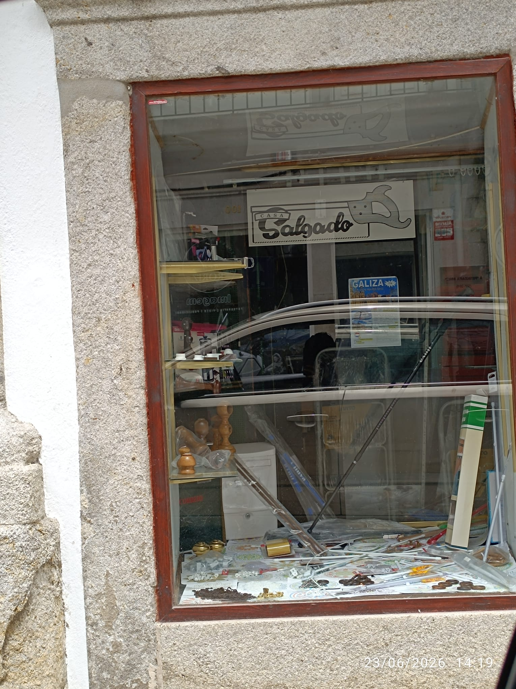

Vendemos ao parafuso, cortamos à medida e ainda atendemos pelo nome.
No centro histórico de Viana do Castelo desde 1954
Uma amostra do que encontra na loja. Não está aqui? Pergunte — em 70 anos de gavetas, é raro não termos.
Os preços podem ser ajustados na loja. Para encomendas ou medidas especiais, ligue-nos ou passe por cá.
A Casa Salgado abriu portas há mais de setenta anos na Rua Gago Coutinho, e pouco mudou desde então — e é assim que gostamos. As gavetas de madeira continuam cheias de parafusos vendidos à unidade, os varões de cortinado cortam-se à medida na hora, e o serrote do letreiro é o mesmo que os avós dos nossos clientes conheceram.
Hoje, como sempre, quem entra é atendido com tempo e conselho. Se não soubermos resolver, conhecemos quem saiba.

Rua Gago Coutinho 67
4900-490 Viana do Castelo